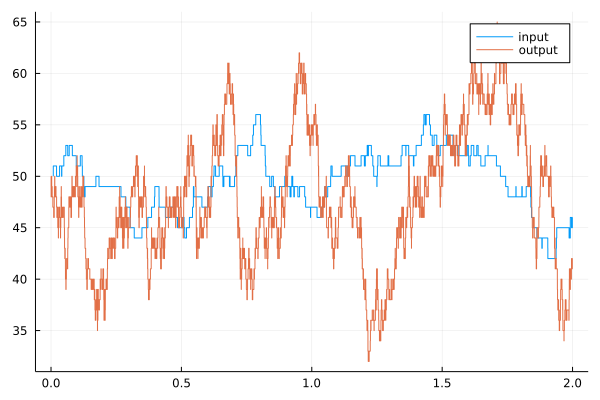
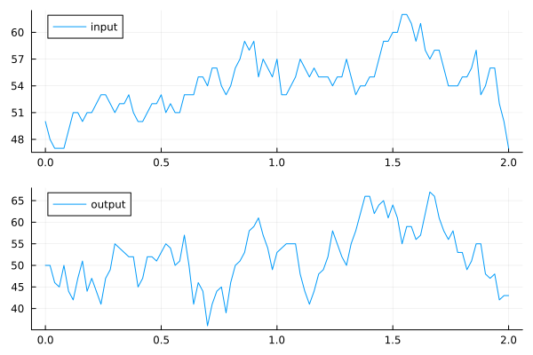
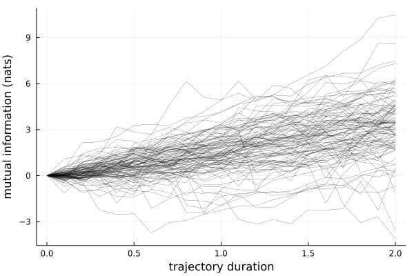
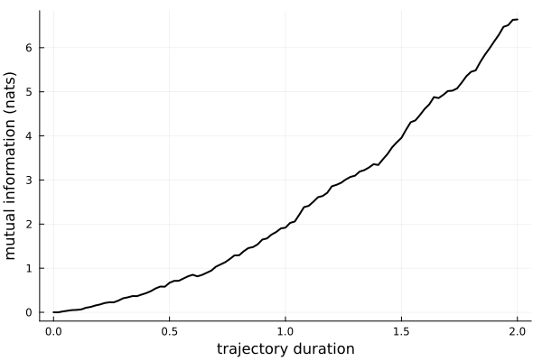
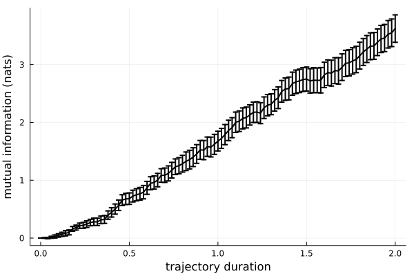
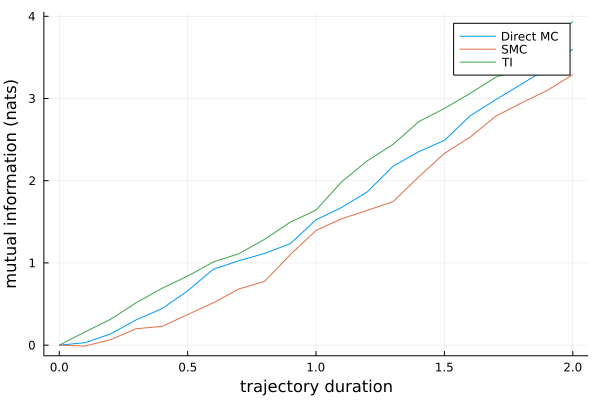

Guide
In this section we will show step by step how PathWeightSampling.jl can be used to compute the mutual information for a simple model of gene expression.
Setting Up the System
The model considered in this example consists of four reactions:
κ
reaction 1: ∅ ---> S
λ
reaction 2: S ---> ∅
ρ
reaction 3: S ---> S + X
μ
reaction 4: X ---> ∅The first two reactions specify the evolution of the input signal S, and last two reactions specify the evolution of the output X. Thus, both the input and output signal are modeled as a simple birth-death process, however the birth rate of X increases with higher copy numbers of S.
The first step is to create the system that we are going to use. The simple gene expression model shown above is already included as an example in PathWeightSampling.jl and can be directly used as follows:
using PathWeightSampling
system = PathWeightSampling.gene_expression_system()SimpleSystem with 4 reactions
Input variables: S(t)
Output variables: X(t)
Initial condition:
S(t) = 50
X(t) = 50
Parameters:
κ = 50.0
λ = 1.0
ρ = 10.0
μ = 10.0The result is a system consisting of the 4 reactions mentioned above and default values for the initial condition and the parameters that specify the reaction rates.
Generating and Plotting Trajectories
We can generate a configuration of this system. A configuration is a combination of an input trajectory and an output trajectories. Using generate_configuration we can create a configuration by first simulating an input trajectory and then use that input trajectory to simulate a corresponding output trajectory.
conf = generate_configuration(system)PathWeightSampling.SXconfiguration{StaticArrays.SVector{1, Int16}, StaticArrays.SVector{1, Int16}, Float64}(PathWeightSampling.Trajectory{StaticArrays.SVector{1, Int16}, Float64}(StaticArrays.SVector{1, Int16}[[50], [49], [50], [49], [48], [49], [50], [51], [52], [51] … [54], [53], [52], [53], [52], [51], [52], [51], [52], [53]], [0.0278570005470322, 0.029701971979352804, 0.029980066517536933, 0.043035872238060116, 0.05966802568972997, 0.07310452948239457, 0.07664609738933133, 0.08167366199461412, 0.09040282057632017, 0.12629366356974436 … 1.9180941316693825, 1.9214830935665355, 1.933810703506581, 1.9357390067572076, 1.9394719297309309, 1.9530700834966759, 1.9801269695421089, 1.9832626351511418, 1.9833028757462992, 2.0], [2, 1, 2, 2, 1, 1, 1, 1, 2, 1 … 2, 2, 1, 2, 2, 1, 2, 1, 1, 0]), PathWeightSampling.Trajectory{StaticArrays.SVector{1, Int16}, Float64}(StaticArrays.SVector{1, Int16}[[50], [51], [52], [51], [52], [53], [54], [53], [52], [51] … [38], [37], [38], [39], [40], [41], [42], [43], [44], [45]], [0.002168885584998872, 0.002771788376285624, 0.005217974151558807, 0.006670122227796804, 0.007782185425681792, 0.008018359180782551, 0.00882801663886447, 0.01008370065400159, 0.010823205117642504, 0.012462338340850143 … 1.9956876967216937, 1.9958396307775952, 1.9960860321105638, 1.9972658739462092, 1.9977591768126524, 1.9978946470139172, 1.9986855449452416, 1.9989097030869172, 1.9997263495072872, 2.0], [3, 3, 4, 3, 3, 3, 4, 4, 4, 3 … 4, 3, 3, 3, 3, 3, 3, 3, 3, 0]))Let us plot the generated configuration:
using Plots
plot(conf)
We see a plot of the generated input and output trajectories that make up the configuration.
The individual trajectories of the configuration can also be accessed directly:
input_traj = conf.s_traj
output_traj = conf.x_traj
p1 = plot(input_traj, label="input")
p2 = plot(output_traj, label="output")
plot(p1, p2, layout = (2, 1))
Computing the Trajectory Mutual Information
For our system we can compute the trajectory mutual information straightforwardly.
result = PathWeightSampling.mutual_information(system, DirectMCEstimate(256), num_samples=100)
Progress: 2%|▌ | ETA: 0:07:13 ( 4.42 s/it)
Progress: 21%|█████▋ | ETA: 0:00:48 ( 0.61 s/it)
Progress: 34%|█████████▏ | ETA: 0:00:29 ( 0.44 s/it)
Progress: 47%|████████████▊ | ETA: 0:00:19 ( 0.36 s/it)
Progress: 60%|████████████████▎ | ETA: 0:00:13 ( 0.32 s/it)
Progress: 74%|████████████████████ | ETA: 0:00:07 ( 0.29 s/it)
Progress: 87%|███████████████████████▌ | ETA: 0:00:03 ( 0.27 s/it)
Progress: 100%|███████████████████████████| Time: 0:00:25 ( 0.25 s/it)This performs a full PWS Monte Carlo simulation and displays a progress bar during the computation. Naturally, the PWS.mutual_information takes the system as its first argument. The second argument is an object specifying the marginalization algorithm to use for computing the marginal trajectory probability. Here we chose the simple brute-force DirectMC algorithm with $M=256$ samples. Thus, we compute a "Direct PWS" estimate. The final keyword argument is the overall number of Monte Carlo samples to use for estimating the mutual information. This is the number of samples taken in the outer Monte Carlo simulation as opposed to the $M=256$ samples taken in the inner Monte Carlo loop.
result is a DataFrame containing the simulation results. We can display the individual Monte Carlo samples:
plot(
system.dtimes,
result.MutualInformation,
color=:black,
linewidth=0.2,
legend=false,
xlabel="trajectory duration",
ylabel="mutual information (nats)"
)
The final Monte Carlo estimate is simply the mean of the individual samples:
using Statistics
plot(
system.dtimes,
mean(result.MutualInformation),
color=:black,
linewidth=2,
legend=false,
xlabel="trajectory duration",
ylabel="mutual information (nats)"
)
Note that since we only used 100 MC samples the fluctuation of the result is relatively large. To judge the statistical error due to the number of Monte Carlo samples, we can additionally plot error bars. A common error measure in Monte Carlo simulations is the "standard error of the mean", defined as the standard deviation divided by the square root of the number of samples. We use this method to draw error bars.
sem(x) = std(x) / sqrt(length(x))
plot(
system.dtimes,
mean(result.MutualInformation),
yerr=sem(result.MutualInformation),
color=:black,
linewidth=2,
legend=false,
xlabel="trajectory duration",
ylabel="mutual information (nats)"
)
More Advanced Marginalization Strategies
So far we computed the mutual information using the brute-force Direct PWS algorithm. However, we can choose a different approach to perform the marginalization integrals. To change the marginalization strategy we simply pass a different algorithm as the second argument of PWS.mutual_information. The possible choices for the marginalization strategy are
DirectMCEstimate(m): The simple brute force marginalization using a Direct Monte Carlo estimate. The integermspecifies the number of samples to use per brute-force computation. This method works well for short trajectories but becomes exponentially worse for longer trajectories.SMCEstimate(m): Improved computation of marginalization integrals using a sequential Monte Carlo technique (specifically using a particle filter). The integermspecifies the number of "particles" that are being propagated simultaneously. This method works much better than theDirectMCEstimatefor long trajectories.TIEstimate(burn_in, integration_nodes, num_samples): Use thermodynamic integration to compute the marginalization integrals. This will set up a number of MCMC simulations in path-space to perform the TI integral.burn_inspecifies the number of initial samples from the MCMC simulation to be discarded,integration_nodesspecifies the number of points to use in the Gaussian quadrature, andnum_samplesspecifies the number of MCMC samples per integration node to generate.AnnealingEstimate(subsample, num_temps, num_samples): Use annealed importance sampling to compute the marginalization integrals. This technique is very similar to thermodynamic integration and also uses MCMC simulations in path space.subsamplespecifies the number of Metropolis trials to perform before recording a new MCMC sample.num_tempssets how many different "temperatures" should be used for the annealing.num_samplesis the number of MCMC samples to use per temperature setting.
We can compute the mutual information using each of these strategies and compare the results:
strategies = [
DirectMCEstimate(128),
SMCEstimate(128),
TIEstimate(0, 8, 16),
# AnnealingEstimate(0, 128, 1)
]
results = [PathWeightSampling.mutual_information(system, strat, num_samples=100, progress=false) for strat in strategies]
plot()
for (strat, r) in zip(strategies, results)
plot!(
system.dtimes,
mean(r.MutualInformation),
label=PathWeightSampling.name(strat),
xlabel="trajectory duration",
ylabel="mutual information (nats)"
)
end
API Summary
Thus, the core function to estimate the trajectory mutual information is PathWeightSampling.mutual_information. A complete description of its arguments and return value is given below.
PathWeightSampling.mutual_information — Functionmutual_information(system, algorithm; num_samples=1, progress=true)Perform a simulation to compute the mutual information between input and output trajectories of system.
Arguments
The required marginalization integrals to obtain the marginal probability $\mathcal{P}[\bm{x}]$ are performed using the specified algorithm.
Overall, num_samples Monte Carlo samples are performed. For each individual sample, one or mupltiple marginalization operations need to be performed.
If progress == true, a progress bar will be shown during the computation.
Returns
Returns a DataFrame containing the results of the simulation. This resulting DataFrame has 3 columns. Assuming, the returned value has been named result the columns can be accessed by:
result.MutualInformation: A vector of vectors that contains the results of the simulation. Each element of the outer vector is the result of a single Monte Carlo sample. Each element is a vector containing the trajectory mutual information estimates for each time specified insystem.dtimes.result.TimeMarginal: A vector containing, for each sample, the CPU time in seconds used for the computation of the marginal entropy.result.TimeConditional: A vector containing, for each sample, the CPU time in seconds used for the computation of the conditional entropy.